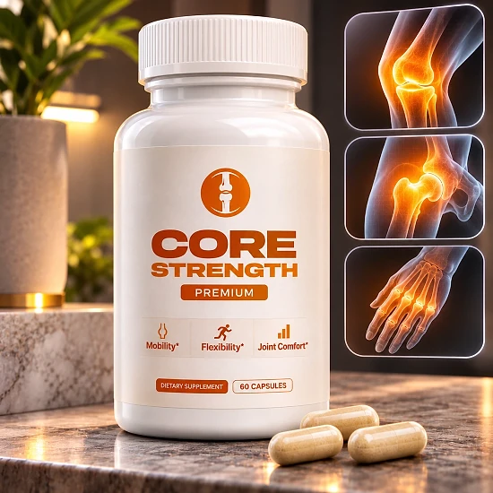
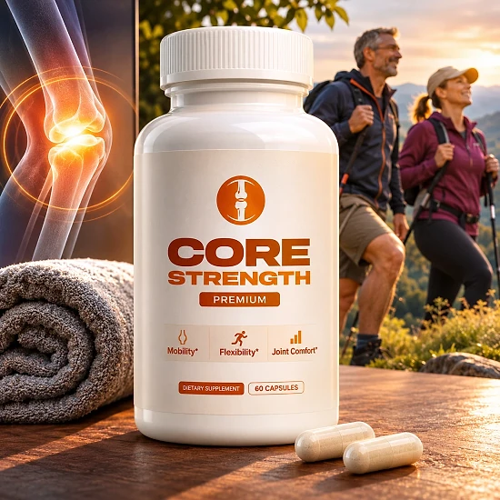
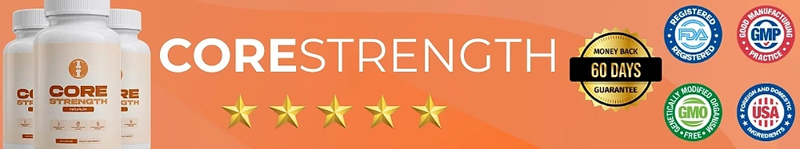

What Is CoreStrength And How Does It Work?
CoreStrength is a daily capsule supplement designed to support healthy joints, bone density, and everyday mobility for adults who feel that stiffness, age, and years of activity have started to make simple movements like walking, bending, and climbing stairs less comfortable — through a simple routine, without complicated plans or changes to their lifestyle.
It utilizes a focused blend of bone-support nutrients that combines Vitamin D3, Vitamin K2 (as MK-7), Calcium, and Black Pepper Fruit Extract (BioPerine®) to support bone strength, joint structure, and flexibility, helping the body maintain the foundation that every joint relies on.
The idea behind CoreStrength, according to the official website, is that strong joints start with strong bones. Vitamin D3 supports calcium absorption, Vitamin K2 helps direct calcium to the bones where it is needed, calcium replenishes the body’s natural supply, and BioPerine® is added to support the absorption of the other nutrients.
Rather than acting as a quick fix, CoreStrength focuses on consistent daily support. The brand explains that rebuilding strength and flexibility takes time, and that the formula is meant to work gradually as part of an active, balanced lifestyle.
With consistent daily use, the official website reports that many users start noticing improvements in mobility and comfort within the first 2 to 3 weeks, and it recommends using the capsules for at least 3 months for optimal joint and bone support. Individual results may vary.
From a practical standpoint, CoreStrength comes as a bottle of 60 veggie capsules. The official label suggests one capsule twice a day, so each bottle covers about a month. The front of the label highlights three goals: supporting bone density, promoting cardio health, and maintaining healthy arteries.
According to the official website, CoreStrength is manufactured in the USA in an FDA-registered facility that follows Good Manufacturing Practices (GMP). It is a dietary supplement, not intended to diagnose, treat, cure, or prevent any disease, and it is meant to complement a healthy lifestyle, not replace medical care.
CoreStrength Ingredients
Every capsule of CoreStrength combines four ingredients listed on the official Supplement Facts panel, chosen to support bones, joints, and mobility as part of a consistent daily routine:
Vitamin D3 (Cholecalciferol), 125 mcg: Supports calcium absorption and bone strength, which the brand describes as essential for maintaining strong, flexible joints.
Vitamin K2 (Menaquinone MK-7), 100 mcg: Helps direct calcium to the bones, where it is needed most, according to the official website.
Calcium (as Calcium Carbonate), 210 mg: Replenishes the body’s supply of calcium to help preserve bone density and joint structure.
Black Pepper Fruit Extract (BioPerine®), 5 mg: Added to support nutrient absorption and help the body make the most of the other ingredients.
The only other ingredient listed is cellulose, which forms the vegetable capsule. Unlike many joint formulas, the official label publishes the exact amount of every ingredient per capsule, which makes it easy to review the formula with a healthcare provider.
CoreStrength is designed for daily use, offering a simple, non-prescription approach to supporting bone and joint health in an easy-to-swallow veggie capsule.
CoreStrength Side Effects
According to the official website, CoreStrength is made with natural ingredients and vitamins commonly found in dietary supplements, and it is generally well tolerated. It is designed for adults who want a simple, balanced approach to bone and joint support without complicated routines.
The brand states that the capsules are manufactured in the USA in an FDA-registered facility that follows Good Manufacturing Practices (GMP), and the official FAQ still recommends consulting a healthcare provider before starting, as with any supplement.
With no widespread reports of serious side effects, CoreStrength is generally considered a well-tolerated option. Still, the formula contains meaningful amounts of Vitamin D3, Vitamin K2, and calcium, so the official FAQ advises not doubling up on vitamins D, K, or calcium from other products unless your healthcare provider recommends it. Do not exceed the recommended dose.
The official label states that the product is not for anyone under 18 or for pregnant or nursing women, and it advises consulting a physician before use, especially if you take medication or have a medical condition. This is particularly relevant for people taking blood thinners, since vitamin K can affect how they work, and for anyone whose doctor monitors their calcium or vitamin D levels.
CoreStrength Dosage
CoreStrength is meant to be taken every day, and it is designed to fit easily into a daily routine, making consistency simple and convenient. It comes as a veggie capsule, with no powders to mix and nothing complicated to prepare.
The official label recommends taking one (1) veggie capsule twice a day, ideally 20 to 30 minutes before a meal with an 8 oz. glass of water, or as directed by your healthcare professional. Each bottle contains 60 capsules, which equals about a month of use. The FAQ on the website mentions one capsule daily with breakfast, so when in doubt, follow the label or your doctor’s advice.
For best results, consistency is key. The official website explains that some users notice better mobility and comfort within 2 to 3 weeks, and it recommends consistent use for at least 3 months for optimal joint and bone support. Individual results may vary.
No drastic lifestyle changes are required, but the brand notes that light activity, good hydration, and a balanced diet can help you get more out of the routine.
As with any wellness product, it’s important not to exceed the recommended dose. Store the bottle in a cool, dry place below 30°C (86°F), keep it out of reach of children, and do not use it if the safety seal is damaged or missing. CoreStrength works best when used regularly, combined with healthy daily habits.
CoreStrength – Refund Policy
You can order CoreStrength with confidence, knowing that every purchase is protected by a 60-day money-back guarantee, counted from the date your order is shipped. This gives you time to try the capsules and decide if they deliver the support you expect.
According to the official refund policy, customers who are not fully satisfied should request the refund within 60 days of the shipping date, which can be confirmed in the order email or on the packing slip. All bottles must be sent back, whether they are empty or unopened, and the customer covers the return postage; no return label is needed.
How the refund process works: Email support with “Refund Request” in the subject line. Before shipping anything, wait for confirmation from a support agent, because returns sent without it may be hard to locate. Include your full name, your order number, and the email address used for the order, and email the tracking ID once the package is on its way.
Customer Support Contact Information: support@getcorestrength.com. The return address is 19655 E 35th Drive, Suite 100, Aurora, CO 80011, USA, and an order status phone line is listed on the official website.
Refund Processing Time: Once the returned items are received and processed, a full refund is issued with an email confirmation, and it typically takes 5 to 10 business days to appear on your financial statement.
This refund policy is designed to give customers a clear and transparent experience when trying CoreStrength.
CoreStrength – Where To Buy
CoreStrength is sold through its official website, so if you decide to try it, it’s important to be careful about where you purchase it. The official website is the only sales channel the manufacturer lists, and the brand states that it is not available on Amazon, Walmart, or other stores.
Listings on third-party platforms may look similar but cannot be verified as authentic, raising concerns about safety, quality, and ingredient freshness. Products purchased outside the official source may not be covered by the 60-day money-back guarantee.
For this reason, most customers recommend purchasing CoreStrength only through the official website. Buying directly from the official source ensures you receive the authentic original product, with access to customer support and the full guarantee. The official website also shows the complete Supplement Facts panel, so you can check every ingredient before ordering.
To avoid counterfeit batches and ensure maximum quality, always verify that you are ordering from the official CoreStrength website before completing your purchase.
To ensure you’re getting the authentic product, most users choose to visit the official website.
Is CoreStrength A Scam?
Based on what the official website discloses, CoreStrength does not appear to be a scam. It is a real product, sold through an established digital retailer, and formulated to support bone density, joint health, and mobility as part of a consistent daily routine.
The ingredients used in CoreStrength — Vitamin D3, Vitamin K2 (MK-7), Calcium, and BioPerine® — are well known in the bone and joint wellness field, and the official label lists the exact amount of each one per capsule, which is a good sign of transparency.
In addition to its clear formula, CoreStrength is, according to the official website, manufactured in the USA in an FDA-registered, GMP facility. The label names the distributor, AstronCaps, with an address in Aurora, Colorado, a support email, and a phone number.
Results vary from person to person, and no supplement can promise a specific outcome. The brand itself says that rebuilding strength and flexibility takes time and recommends at least 3 months of consistent use, which is why realistic expectations matter.
CoreStrength is backed by a 60-day money-back guarantee, and the official website describes every order as a one-time purchase with no autoship. This policy underscores the manufacturer's commitment to customer satisfaction and product integrity.
If you’re looking for a simple daily capsule to support strong bones, flexible joints, and everyday mobility, CoreStrength is worth considering — especially when purchased directly from the official website.
For those who want to verify product details or check current availability, the official CoreStrength website remains the safest option.

Check Availability On Official Website
